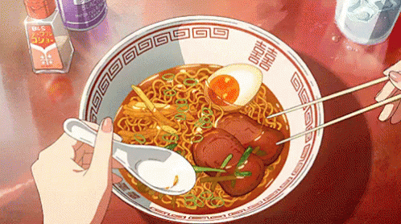

Ramen

Delicious simple ramen recipe
Get slurping with this Japanese classic.
Top with a soft boiled egg and fresh chilli for
an authentic touch.
Ingredients
- 600g diced beef, fat trimmed, cut into 4cm pieces
- 1/4 cup salt-reduced soy sauce , plus 2 tbsp extra
- 2 tbsp oyster sauce
- 2 tbsp brown sugar
- 2 garlic cloves, finely chopped
- 4cm piece ginger, sliced
- 2 star anise
- 2L (8 cups) salt-reduced beef stock
- 1/4 cup white miso paste
- 200g shiitake mushrooms, sliced
- 4 free-range eggs
- 270g ramen noodles
- Sesame seeds, to serve
- Coriander sprigs, to serve
- Sliced red chilli, to serve
- Sriracha sauce, to serve
Steps
-
In a medium saucepan add beef, 1/4 cup soy sauce, oyster sauce,
brown sugar, garlic, ginger, star anise and half the beef stock.
Bring to a boil, regularly skimming impurities off the top, and
simmer, uncovered, for 1 ¼ to 1½ hours or until the beef is
tender and liquid reduced and thickened. Drain off most of the
liquid and set meat aside, covered with foil to keep warm. Shred
meat once cool enough to handle.
- In a large saucepan add remaining beef stock, 1 cup (250ml)
water, miso paste, remaining soy, mushrooms, pak choy and snow peas.
Heat over medium-low, covered, for 5 minutes or until pak choy and
snow peas are tender.
- Meanwhile, cook eggs for 4 to 5 minutes in a medium saucepan of
simmering water. Remove with a slotted spoon and place in a bowl of
cold water. Once cool enough to handle peel eggs and cut into
halves.
-
In the same pan of boiling water cook noodles according to packet
instructions. Drain.
-
Divide noodles among bowls and ladle miso soup and vegetables over
the top. Add beef mixture and eggs to bowl. Serve sprinkled with
sesame seeds, coriander, chilli and Sriracha sauce, if desired.